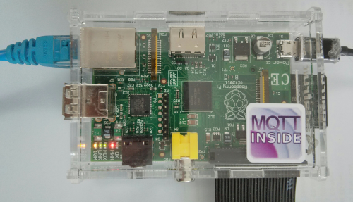

MQTT broker
An MQTT broker is a service to which MQTT clients connect. These clients publish
data to specific topics and they can subscribe to one or more topics to receive
messages. A topic is like an "address" for a particular message. For example,
a topic for a device that publishes a temperature reading of your living room
may be temperature/indoors/living, whereas a device which publishes weather
data could do so to weather/germany/frankfurt. In the particular case of OwnTracks, we
use a topic branch called owntracks/username/device, but you can override that
name if you prefer to. The reason we've chosen that structure is to accomodate
friends and family on a single broker, taking into consideration that a particular
user might have more than one device.
Private broker
Ideally, you set up a private broker under your control. This sounds more difficult than it actually is, and there are some very nice brokers you can use free of charge on your own infrastructure. As an example, we've written up how to install Mosquitto on a Raspberry Pi.
RasPi

The hardest bit is installing an OS, say, Raspbian Wheezy, onto an SD card, but there are many tutorials on how to do that. (Here's an example using Mac OS X.) A basic install will suffice, and after logging in with Raspbian's default username and password, we'll get started from there. Note that the current Raspbian Wheezy mosquitto package does NOT contain the mosquitto_passwd tool. If you want to use it, make sure you install the package from a mosquitto repo:
Roger Light, Mosquitto's creator has thankfully (!) set up a few Mosquitto repositories we can use to obtain the latest and greatest version, so we'll do just that. We first perform the required steps to add and activate the repository. The last step in particular can take a few moments.
curl -O http://repo.mosquitto.org/debian/mosquitto-repo.gpg.key
sudo apt-key add mosquitto-repo.gpg.key
rm mosquitto-repo.gpg.key
cd /etc/apt/sources.list.d/
sudo curl -O http://repo.mosquitto.org/debian/mosquitto-$(awk -F"[)(]+" '/VERSION=/ {print $2}' /etc/os-release).list
sudo apt-get update
Now we can go ahead and install Mosquitto proper. There are three packages:
mosquittois the MQTT broker (i.e. server)mosquitto-clientsare the command-line clients, which I recommend you install- Don't install
python-mosquitto; if you want to do programming with Python and MQTT, we show you how to do so with the Paho Python module.
sudo apt-get install mosquitto mosquitto-clients
Regrettably, as with most Debian packages, the broker is immediately started; stop it.
sudo /etc/init.d/mosquitto stop
That concludes the installation of the Mosquitto MQTT broker, and we'll now proceed to its configuration. This section is geared towards a configuration of Mosquitto which will work well with OwnTracks. In particular we want the following features enabled by default:
- Connections to the broker must be authenticated either against user/password or using client certificates.
- Connections to the broker shall also be TLS protected. This requires a (server-side) TLS certificate and key which will be configured automatically.
- ACLs will restrict who may access what.
To create a mosquitto user database, use sudo mosquitto_passwd -c /etc/mosquitto/passwd <username>.
You will be prompted to enter a password. That will be the password required to connect to the server (with the username you chose). If you want to add more users, repeat the command without -c as that will create (i.e. overwrite) the passwd file.
Add a config line password_file /etc/mosquitto/passwd to /etc/mosquitto/mosquitto.conf.
If you want to use certificates to identify yourself to the broker and/or to TLS-encrypt the TCP session, we've got some utilities over at the OwnTracks repository which are going to automate this process for you. It's a work-in-progress (of course), but this is what sudo ./mosquitto-setup.sh looks like at the moment:
Saving previous configuration as mosquitto.conf-20130901-133525
Generating a 2048 bit RSA private key
.................................................................................................+++
...............................+++
writing new private key to '/etc/mosquitto/ca.key'
-----
Created CA certificate in /etc/mosquitto/ca.crt
subject=
commonName = An MQTT broker
organizationName = MQTTitude.org
emailAddress = nobody@example.net
--- Creating server key and signing request
Generating RSA private key, 2048 bit long modulus
............+++
..............+++
e is 65537 (0x10001)
--- Creating and signing server certificate
Signature ok
subject=/CN=raspberrypi/O=MQTTitude.org/emailAddress=nobody@example.net
Getting CA Private Key
A CA is created together with a server key-pair with a whole bunch of subjAltName
settings:
X509v3 Subject Alternative Name:
IP Address:192.168.1.189, IP Address:127.0.0.1, IP Address:0:0:0:0:0:0:0:1, DNS:broker.example.com, DNS:foo.example.de, DNS:localhost
Check for a couple of broker settings in /etc/mosquitto/mosquitto.conf.
Your mileage may vary, but you might want to set the following parameters:
listener 8883 <yourIP>
persistence_file mosquitto.db
log_dest syslog
log_dest stdout
log_dest topic
log_type error
log_type warning
log_type notice
log_type information```
connection_messages true
log_timestamp true
allow_anonymous false
password_file /etc/mosquitto/passwd
Will it work? Let's start the broker manually to see what it says:
sudo /usr/sbin/mosquitto -c /etc/mosquitto/mosquitto.conf
1378042632: mosquitto version 1.2 (build date 2013-08-09 21:49:03+0100) starting
1378042632: Config loaded from /etc/mosquitto/mosquitto.conf.
1378042632: Opening ipv4 listen socket on port 1883.
1378042632: Opening ipv4 listen socket on port 8883.
1378042632: Opening ipv6 listen socket on port 8883.
1378042632: Warning: Address family not supported by protocol
...^C
1378042634: mosquitto version 1.2 terminating
1378042634: Saving in-memory database to /tmp/mosquitto.db.
The Mosquitto clients need to have access to a copy of the CA certificate (ca.crt) and you can transport that insecurely to your clients (it's a public certificate).
mosquitto_pub --cafile ca.crt -h 127.0.0.1 -p 8883 ...
That's it for the moment.
Testing
Once you've chosen an MQTT broker, make sure you feel comfortable with the utilities it provides to subscribe and publish to topics. We recommend the Mosquitto utilities for doing so.
For example, to subscribe to all topics prefixed by owntracks on your broker:
mosquitto_sub -h hostname -p 1883 -v -t 'owntracks/#'
(Note that the hash symbol has to be quoted in the shell which is why we've put the whole topic branch in single quotes.)
In another screen you could publish a test message:
mosquitto_pub -h hostname -p 1883 -t 'owntracks/test' -m 'hello world'
and in the first screen you'd see the topic name followed by a space and the message payload.
Once you feel comfortable with what is going on, you should consider adding TLS.
Bridging
If you want to connect two (or more) brokers (e.g. yours and that of your friend) you can, and we've written up how you can bridge brokers.
Logging
Before doing anything else, please consult the manual to determine where your Mosquitto logs are being written to. It's hard stabbing around in the dark when a glance at a log file can give you valuable tips on what is actually happening.
Mosquitto typically logs via syslog, and syslog's configuration defines where the log messages are actually written to. Your syslog may be called syslog, rsyslog, syslog-ng, or anything else for that matter. In case of doubt, check the files in /var/log; one of them ought to have what you're looking for (e..g messages, syslog, localmessages, or even debugmessages).
Mosquitto typically logs each connection request, a publish, a subscribe request, etc. (Read the manpage for mosquitto.conf to learn how to configure logging.
A successful publish of an OwnTracks location could look somewhat like this:
mosquitto[1366]: Received PUBLISH from jane-5s-m-o (d0, q2, r1, m7, 'owntracks/jane/5s', ... (159 bytes))
mosquitto[1366]: Sending PUBREC to jane-5s-m-o (Mid: 7)
mosquitto[1366]: Received PUBREL from jane-5s-m-o (Mid: 7)
mosquitto[1366]: Sending PUBCOMP to jane-5s-m-o (Mid: 7)
ACLs
You will definitely want to set up Access Control Lists (ACLs) on your broker so that you can control who may see what. As an example, suppose Jane (username jjolie) should be able to publish to her OwnTracks MQTT topics and Fred (username fred) should be allowed to see Jane's location, we could configure something like this:
user jjolie
topic owntracks/jjolie/#
user fred
topic read owntracks/jjolie/5s
topic owntracks/fred/nexus/#
Firewall
If you want to run your Private broker it's possibly going to be at home under your desk (or is it in your small office?). Be that as it may, how does an OwnTracks app reach (network-wise) that broker? Chances are you have some form of router which connects the local network in your home to the Internet.
OwnTracks runs on the device which is in your pocket or your purse, or wherever you placed it, and it must be able to connect to your MQTT broker, but it cannot: your router hopefully has a firewall configured on it which will allow outgoing (from your home outwards) connections, but it is sure to not allow incoming connections. We must change that, at least for MQTT, and we're going to assume you've configured TLS, i.e. your broker is (also) listening on TCP port 8883
What you need to do to get this working is to reconfigure your router to allow incoming TCP traffic on port 8883 and to hand that off to the TCP/IP address of your MQTT broker. The exact details on how to do that vary from vendor to vendor, but a close look at the documentation of your router should show you how to do that.
What is also likely, or at least possible, is that your home doesn't have a fixed TCP/IP address, but one which changes periodically. The OwnTracks apps won't be able to find your home then, will they? If you keep "moving" (i.e changing addresses).
A service which is typically (if maybe incorrectly) called dynamic DNS comes to the rescue. These services allow you to configure a DNS name (e.g. freds-router.example.org) which points to the changing IP address of your router.
Once you've completed those steps, configure the OwnTracks apps to use the shiny new DNS name and TCP port number (8883) and you should be all set.
OwnTracks
So, you've configured your broker and you are familiar with the mosquitto command-line clients, so now it's time to see if you can get OwnTracks to speak to your broker.